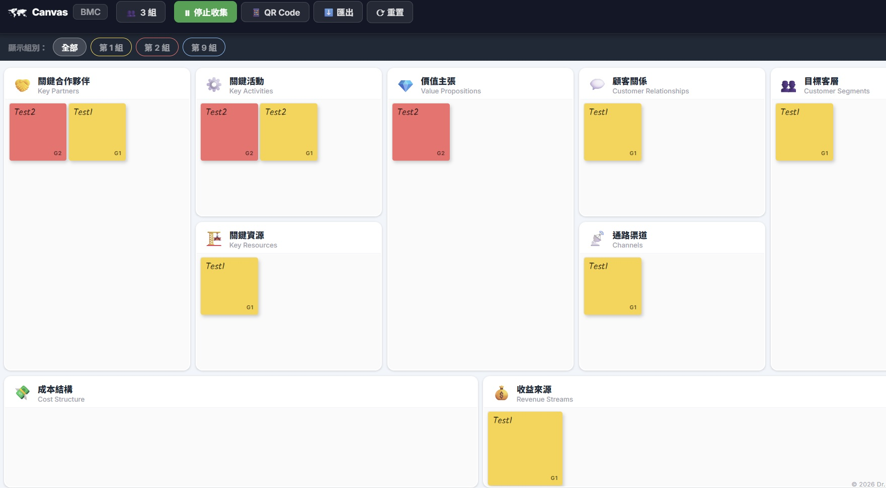
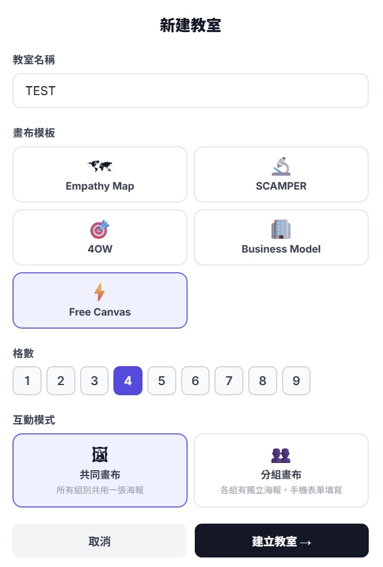
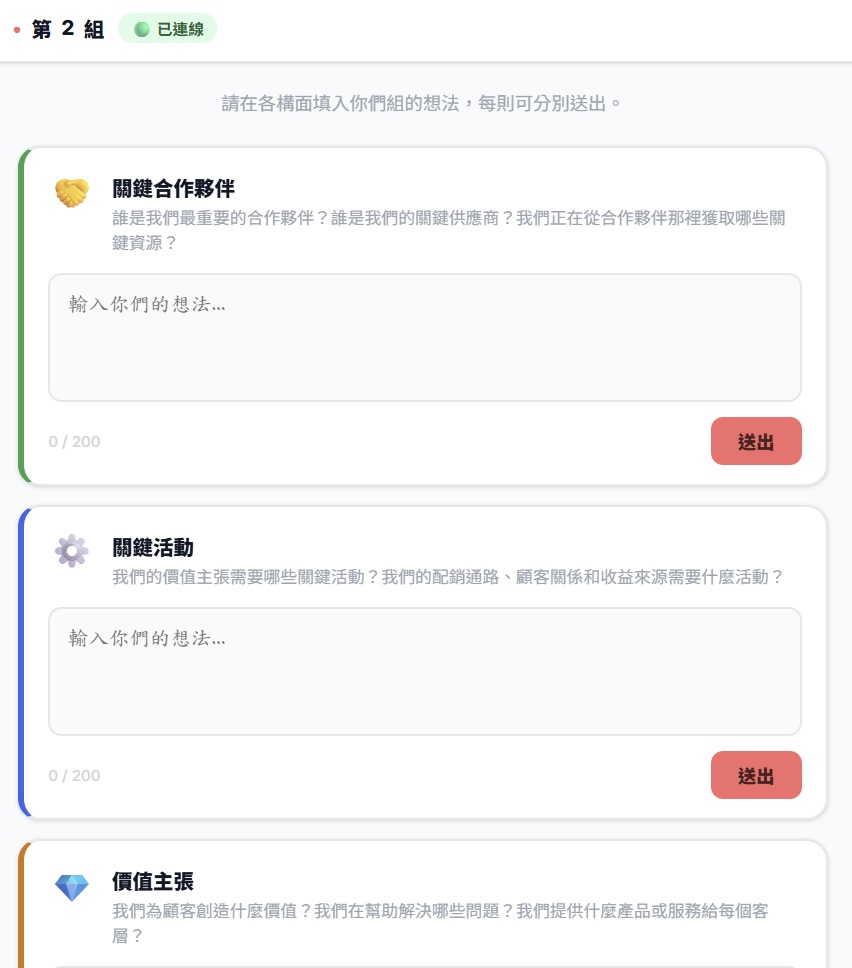

設計工具 · 互動教學
Canvas
2025.10 · 個人專案

FIG. 10 — 產品主畫面
關於這個作品
Canvas 是一個以「白板」為核心概念設計的課堂協作工具。
教師選擇框架模板（Empathy Map、SCAMPER、Business Model Canvas 等），開啟房間後學生掃碼加入，每個人都能在白板上對應的區塊即時貼上便利貼，所有人同步看到彼此的輸入，不再需要輪流上台或等待回合。
內建多色便利貼、分組顯示（可按組別篩選）、賓果完成判定，以及 QR code 快速加入。純 Node.js + Socket.io 驅動，無前端框架依賴。
作品亮點
白板概念：學生即時在模板上貼便利貼，所有人同步看到
支援 Empathy Map / SCAMPER / FOUROW / BMC 等多種模板
按組別篩選便利貼，方便比較各組觀點
QR code 加入 + 賓果完成判定，純 Socket.io 驅動
操作畫面

